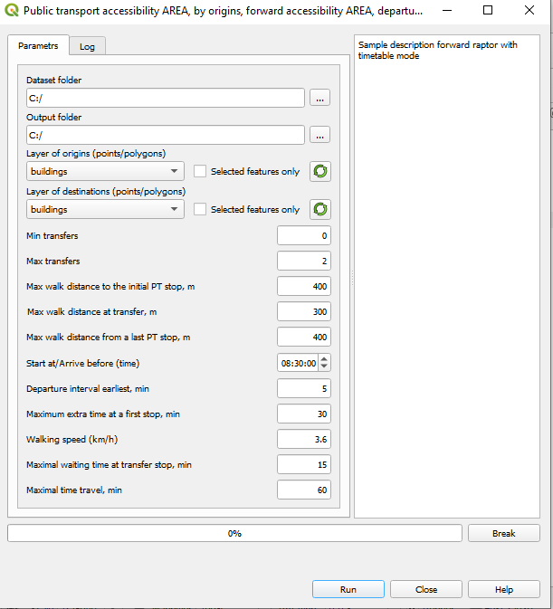

Public transport: Forward/backward accessibility AREA/MAP, Timetable mode
Данный режим является расширением режимов
Forward/backward accessibility Area, fixed departure/arrived time (Смотрите раздел.)
Forward/backward accessibility MAP, fixed departure/arrived time (Смотрите раздел.)
Вычисление
Открыть плагин и выбрать пункт меню
Для режима Forward accessibility AREA
Public transport accessibility AREA -> Forward accessibility AREA, departure matches the table.
Для режима Backward accessibility AREA
Public transport accessibility AREA -> Backward accessibility MAP, arrival time interval.
Для режима Forward accessibility MAP
Public transport accessibility MAP -> Forward accessibility AREA, departure matches the table.
Для режима Backward accessibility MAP
Public transport accessibility MAP -> Backward accessibility MAP, arrival time interval.

Откроется диалоговое окно настроек параметров.
Для данного режима дополнительно необходимо указать:
Для режима Forward accessibility:
Maximal waiting time at transfer stop, min: Максимальное время ожидания начала поездки
Departure interval earlist, min: Промежуток времени, за который нужно быть на первой остановке до посадки на транспорт
Для режима Backward accessibility:
Maximal waiting time at transfer stop, min: Максимально раннее время прибытия в конечную точку
Departure interval latest, min: Промежуток времени, за который нужно быть на последней остановке (здании) до заданного времени завершения поездки
Структура отчета
В зависимости от выбранного режима формируется отчет AREA или MAP
Диаграмма потоков данных
Смотрите раздел.